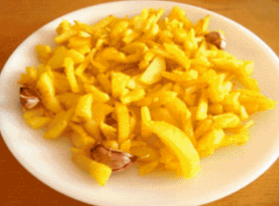

papas fritas
receta de patatas fritas caseras

Ingredientes
3 o 4 patatas(300g)
4 dientes ajo
aceite de oliva
sal
elaboración(pasos)
Calentar aceite en una sartén.
Añadir las patatas cortadas, la sal y los ajos.
Freir al gusto.
Servir en plato.